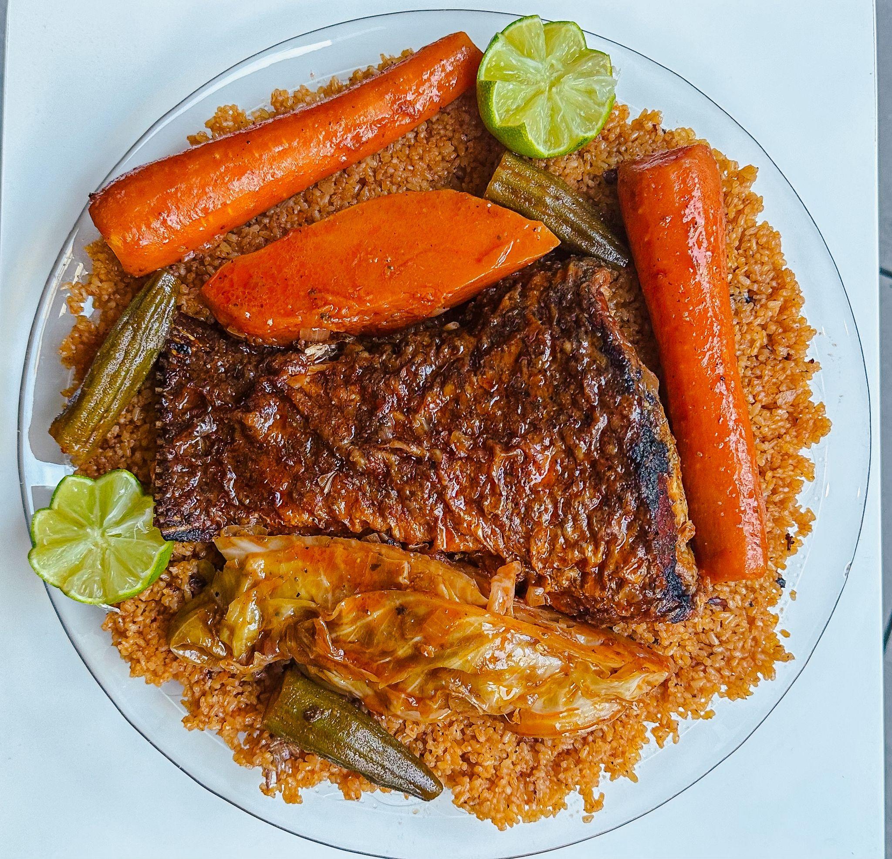

Fish Rice

Description
Fish and rice, also known as Thieboudienne in its most famous version, is a complete and flavorful dish that combines the freshness of the ocean with the rice texture of fragrant rice. The fish is simmered in a smooth sauce with seasonal vegetables, allowing the flavors to permeate every grain.
This recipe is ideal for a convivial family meal. It stands out for its perfect balance between mild spices and the melt-in-your-mouth texture of the ingredients, offering a culinary experience that is both rich in color and tradition.
Ingredients
- 500g of rice (broken or fragrant)
- 2 nice fish fillets (or one whole cleaned fish)
- 2 carrots, 1 eggplant, and a few pieces of cassava
- 100g of tomato paste
- 2 onions and 3 cloves of garlic
- Sunflower or peanut oil
- Spices: salt, pepper, a little chili (optional), and fish stock
Steps
- Preparing the fish: Fry the pieces of fish in a large pot with oil until golden brown, then set aside.
- Cooking the sauce: In the same pot In a pan, saute the chopped onions, garlic, and tomato past in oil. Add water and the chopped vegetables.
- Simmering: Return the fish to the sauce and simmer over medium heat for about 20 minutes, until the vegetables are tender.
- Cooking the Rice: Remove the fish and vegetables, then add the (previously rinsed) rice to the remaining broth. Cover and cook over low heat.
- Serving: Once the rice is cooked, serve it in a large dish, arranging the fish and vegetables on top.
HOME